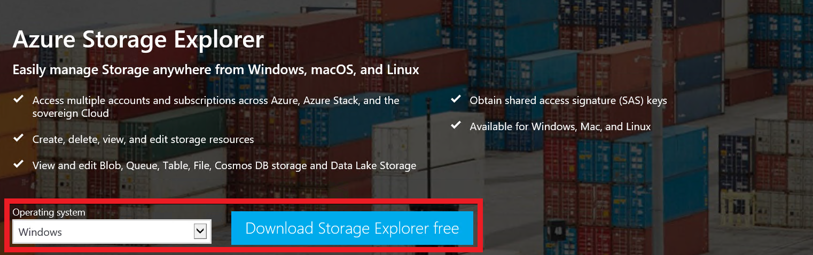
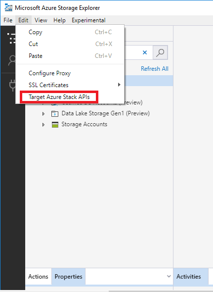
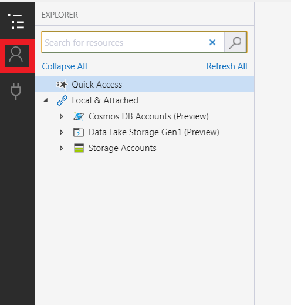
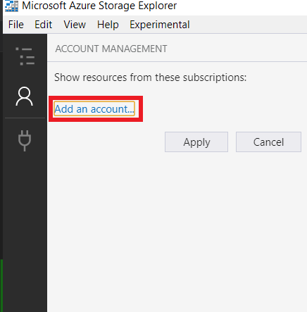
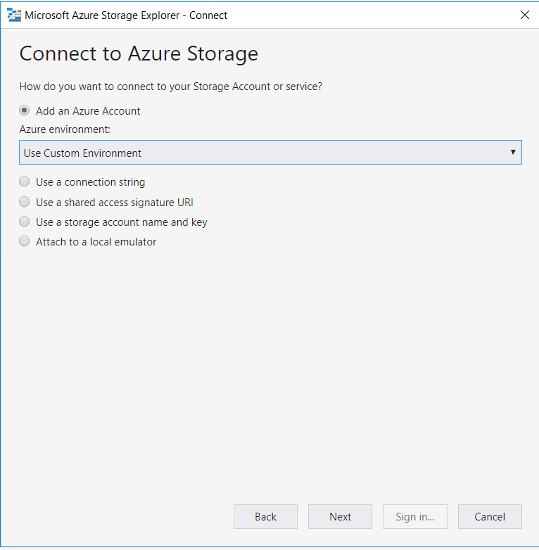
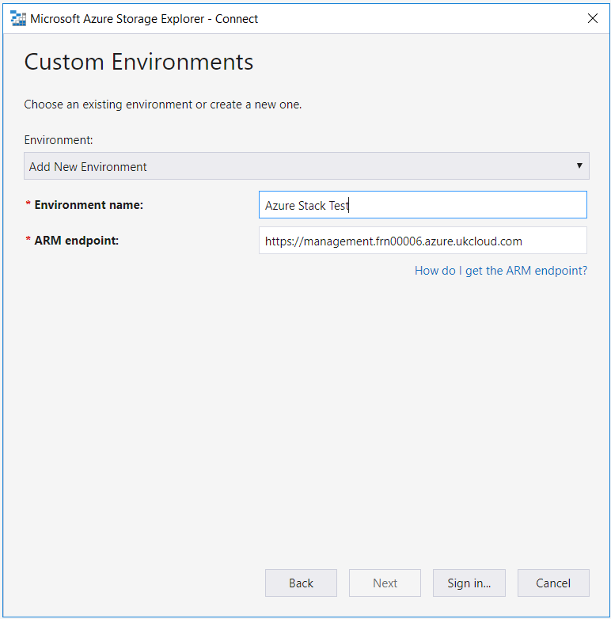
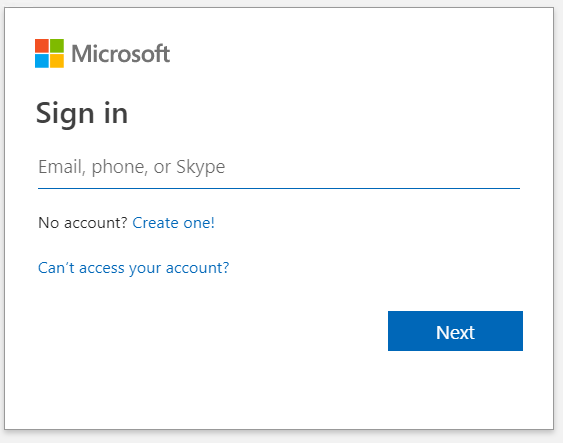
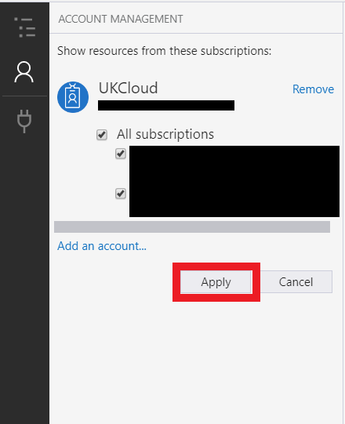

How to link Azure Storage Explorer to Azure Stack Hub
Overview
In this article, you will learn how to link Azure Stack Hub subscriptions to the Azure Storage Explorer. Azure Storage Explorer is a standalone application that allows you to easily work with Azure Stack Hub storage data on Windows, macOS and Linux. With this application, you can easily download and upload objects to Azure Stack Hub, which makes tasks such as downloading and uploading data disks to VMs very easy.
If you need to install Azure Storage Explorer, please click here and install it.
Installation and setup
Download and install Storage Explorer.

From the Edit menu, select Target Azure Stack Hub APIs then restart Storage Explorer.

Once re-launched navigate to accounts.

Select Add an account...

Select Add an Azure Account > Use Custom Environment.

Name the environment Azure Stack Hub and use
https://management.frn00006.azure.ukcloud.comfor the ARM endpoint.
Sign in with your Azure Stack Hub credentials when prompted.

Click Apply.

Now that you've linked Storage Explorer to Azure Stack Hub, you can access all of your storage accounts.
Feedback
If you find an issue with this article, click Improve this Doc to suggest a change. If you have an idea for how we could improve any of our services, visit the Ideas section of the UKCloud Community.